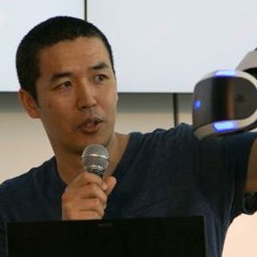
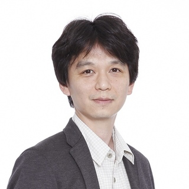

楽天テクノロジーカンファレンス2016
ライブ接続@札幌のご案内 10/22 (SAT)

札幌で玉川竜司さんのセッションあり！

今年は、数々の技術書の翻訳者としても有名な
Sky株式会社の玉川竜司さんに、Site Reliability Engineeringについて
札幌支社でセッションしていただきます！！
Outline
今年も楽天札幌支社では、Rakuten Technology Conference 2016のサテライト会場として、
皆様のご参加をお待ちしております。
今年は、AR/VR Roboticsに加え、去年から引き続きAI/Deep Learningのセッションあり、DevOpsの話もあります。
1日でIT業界の先進的かつ挑戦的な話を聞くことができます。
全編英語のため海外カンファレンスの雰囲気も楽しめます！
社会人の皆さんだけでなく、IT業界に興味がある学生の皆さんの参加もお待ちしております。
是非、一緒に楽しみましょう！！
- ✔︎ 参加費無料!!
- ✔︎ 中継だけじゃない！玉川さんの講演を聞けるのは札幌だけ！！
- ✔︎ 昼食（お弁当）、おやつ、終了後はビアバッシュあり（もちろん無料）
- ✔︎ 電源/wifi完備
- ✔︎ 全編英語ですがスライドもあるので意外と理解できちゃいます（解説もあるかもしれません）
- ✔ ノベルティあり♪
- 席に限りがありますのでお早めに! (当日キャンセルが発生しないようお願い致します)
Information
| Date | 2016/10/22 (SAT) |
|---|---|
| Schedule |
10:30 受付開始 11:00 講演開始 17:00 ビアバッシュ開始 |
| Place | 北海道札幌市中央区北五条西5-2-5信金中央金庫ビル |
| Price | Free |
Sapporo's time table
| TIme | Session1 (7F) | Session2 (8F) |
|---|---|---|
| 11:00 - 11:45 |
Using Vision Sensors for Innovative HCI
Hideki Koike (Professor, School of Computing,Tokyo Institute of Technology) 東京工業大学小池教授によるハイスピードカメラやIRカメラなど ヴィジョンセンサーを使ったHCIに関するセッションです。 水面をタッチパネルのように扱うなど、 次世代のインターフェースについて是非キャッチアップしてください。 |
Beyond Breakpoints: Improving Performance for Responsive Sites
Aysha Anggraini (Front-end Engineer at Viki, Rakuten, Inc.) 楽天のフロントエンドエンジニアによる レスポンシブルサイトのパフォーマンス改善に関するセッションです。 実用的な技術や便利ツールの紹介もあるそうなので フロントエンドエンジニア必見です。 |
| 12:00 - 12:45 |
Experiences with PlayStation VR
 Yasuo Takahashi (Director, Hardware Global Product Strategy & Management Dept.,Sony Interactive Entertainment) Sony Computer EntertainmentからPlayStation VRに関する発表です 今年最もホットなテーマの一つであるPSVR どのような発表になるのか乞うご期待です |
The Web's Next Adventure(s)
Mark Nottingham (Principal Architect, Akamai Technologies) AkamaiのPrincipal ArchitectによるHTTP/2 and QUICの セッションです HTTP/2 and QUICについて、なんとなく知ってはいるけど、 より詳しく知りたいという方も多いのではないでしょうか？ この機会を是非お見逃しなく！ |
| 13:00 - 13:45 |
Rakuten, Inc. Keynote Speech
|
|
| 14:00 - 14:45 |
IBM Research
Koichi Takeda (IBM Research) 今年の目玉の一つであるWatsonについての発表です。 自然言語処理の研究で有名な武田氏からどのような話が語られるか期待です |
Huge Enterprise Systems Architecture Design with Java EE
 Hirofumi Iwasaki Group Manager, Rakuten Card Co.,Ltd. Java開発者必見です。 楽天カードを支えるJavaシステムの設計、開発に関するセッションで 最新のJavaの話題も出るようです。 |
| 15:00 - 15:45 |
Rakuten Ichiba
Rakuten ICHIBA developpers 楽天市場を支える技術についてのセッションです。 Redis Clusterの使い方、レガシーシステムのupdateについて、 スマホアプリの再構築についてなどかなり多彩に渡る発表があります |
The Spotify Playbook
Jonathan Rasmusson Spotify アジャイルサムライの著者でもあり、Spotifyの開発者でもある方が アジャイル、リーンについてご自身の経験から重要な取得ポイントや見解について シェア頂けるようです。 |
| 16:00 - 16:45 |
About SRE (TBD)
|
|
| 17:00 - 19:00 |
ビアバッシュ
みんなでワイワイビアバッシュです |
|
Registration(参加登録)
Here (こちらから)
去年ご参加頂いた参加者さまのブログ
- niku様
Link
- Official Page
- 楽天テクノロジーカンファレンスの見どころ(Japanese Version)
- What’s attractive in Rakuten Technology Conference 2016. (English Version)
- Facebook
- Twitter